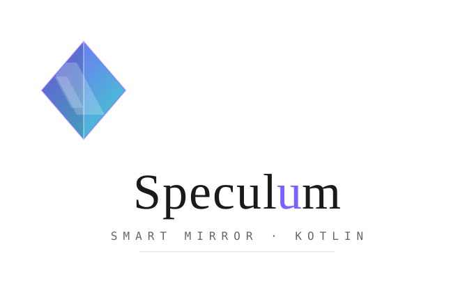

Compose for Desktop · JVM · Plugin-based
A reimagining of MagicMirror² as a modular smart-mirror dashboard. Bright modules on a pure-black background, so it reflects as a "magic mirror" behind two-way glass. Starts fullscreen.
Modules are plug-ins: each ships as its own JAR, dropped into
plugins/, discovered at runtime via reflection — add or remove features without rebuilding the app.
Why Speculum
Drop-in modules
Each feature is a standalone JAR found by ServiceLoader. No app rebuild, no config edit — its default placement is auto-added.
True mirror palette
Three MagicMirror brightness tiers on black. Icons are white vectors, never color emoji — only bright pixels show through two-way glass.
Hot-reloading admin
A password-protected web UI edits config.json; the running mirror watches the file and reboots its engine on save.
Raspberry Pi ready
Native .deb / .rpm / Arch packages bundle a JRE, every plugin, and the admin — one process, kiosk autostart.
Published API
org.speculum:mirror-api ships to GitHub Packages on every release, so out-of-tree modules compile without the full checkout.
Signed releases
Every release carries SHA256SUMS with optional detached GPG signatures and a published public key.
How it maps to MagicMirror²
| MagicMirror² concept | Speculum |
|---|---|
config.js modules array | MirrorConfig / ModuleConfig (JSON) |
Module.register(...) | MirrorModule abstract class |
module lifecycle (start, …) | start() / refresh() / stop() |
| screen regions (top_left, …) | Region enum + MirrorScreen layout |
sendNotification bus | Notification + MirrorEngine.broadcast() |
node_helper data fetching | provider classes (e.g. WeatherProvider) |
| 3rd-party modules folder | external JAR plugins (ModuleFactory SPI) |
Quick start
git clone https://github.com/pierrejochem/Speculum.git
cd Speculum
./gradlew :composeApp:runThis builds + deploys every module JAR into plugins/, then launches the fullscreen mirror.
Full instructions on the Getting Started page.